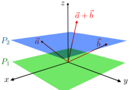

```{sage}
A = AffineSpace(2, RR)
A
```Affine Space of dimension 2 over Real Field with 53 bits of precision
It’s quite common to think of physical space as \(\mathbb{R}^3\), but this perspective can be misleading, both from a mathematical and a physical standpoint. Instead, the three-dimensional space we encounter in Classical Physics (and even the four-dimensional spacetime in Special Relativity) is more accurately captured by the concept of affine spaces.
To understand this better, let’s dive into what a real affine space is. A real affine space of finite dimension \(n\), denoted by \(\mathbb{A}^n\), is a collection of elements known as points, but with some additional structure:
A trivial affine space would be the real affine plane \(\mathbb{A}^2 = \mathbb{R}^2\) with the displacement space being the vector space \(\mathbb{R}^2\):
Affine Space of dimension 2 over Real Field with 53 bits of precisionWe define two points of the affine space:
The affine space is not itself a vector space:
R and T points can not be added.We can displace the point \(Q\) to a new point \(P\) using the translation \(\mathbf{v} \in V\). Therefore \(P = Q + \mathbf{v}\):
A less trivial example is the system \(\begin{cases}x + y + z = 2 \\2x + y - z = 1\end{cases}\)
The solution space of the system is an affine space \(\mathbb{A}^3\):
Affine Space of dimension 3 over Real Field with 53 bits of precisionAdditionally, the the solution space of the homogeneous system is the space of displacements \(V\):
Vector space of degree 3 and dimension 1 over Real Field with 53 bits of precision
Basis matrix:
[ 1.00000000000000 -1.50000000000000 0.500000000000000]We can get a particular solution \(Q \in \mathbb{A}^3\) and verify that it is indeed a solution:
(-1.00000000000000, 3.00000000000000, 0.000000000000000)The general solution of the system is given by the displacement of \(Q\). For example another solution \(P \in \mathbb{A}^3\) is the following: